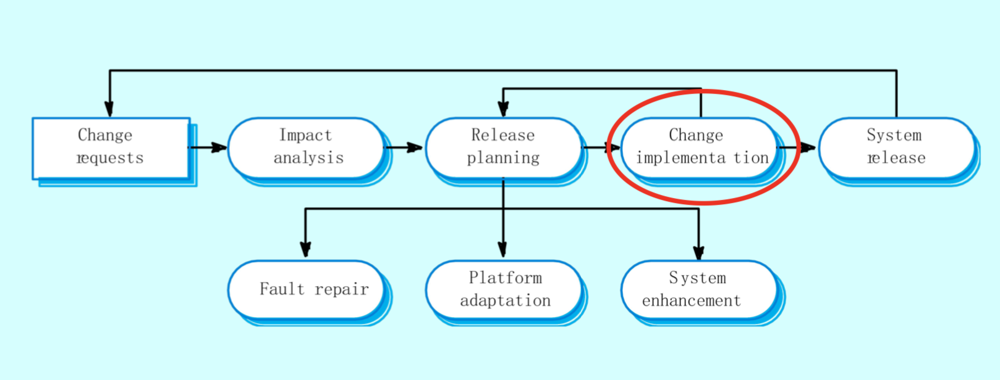
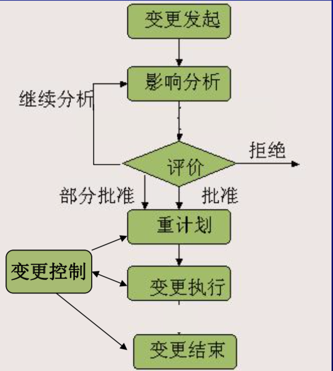

软件测试与维护（十一）：软件维护
软件维护的定义
- 软件维护是指软件系统交付使用以后，为了改正错误或满足新的需求而修改软件的过程。
- 要求进行维护的原因：
- 改正程序中的错误和缺陷。
- 改进软件以适应新的软、硬件环境。
- 增加新的应用范围。
软件维护的类型
- 改正性维护
- 在软件交付使用后，因开发阶段的问题以及测试不彻底、不完全，必然会有部分隐藏的错误遗留到运行阶段。
- 为了识别和纠正软件错误、改正软件功能、非功能（性能）上的缺陷、排除实施中的误使用， 应当进行的诊断和改正错误的过程就叫做改正性维护。
- 适应性维护
- 在使用过程中，
- 外部环境（新的硬、软件配置）
- 数据环境（数据库、数据格式、数据输入/输出方式、数据存储介质）可能发生变化。
- 为使软件适应这种变化，而去修改软件的过程叫做适应性维护。
- 在使用过程中，
- 完善性维护
- 在软件的使用过程中，用户往往会对软件提出新的功能与性能要求。
- 为满足这些要求，需要修改或再开发软件软件，以扩充软件功能、增强软件性能、改进加工效率、提高软件的可维护性。
- 这种情况下进行的维护活动叫做完善性维护。
- 预防性维护
- 预防性维护即软件再工程，是为了提高软件的可维护性、可靠性等，为以后进一步改进软件打下良好基础。
- 采用先进的软件工程方法对需要维护的软件或软件中的某一部分（重新）进行设计、编制和测试，称为预防性维护。
- 各种占比
- 完善性维护：50-66%、适应性维护：18-25%
- 改正性维护：17-21%、其它维护：4%
- 维护占比：70.8%
结构化维护 VS 非结构化维护
- 结构性维护：如果采用软件工程的方法进行软件开发，保证每个阶段都有完整且详细的文档，这样维护会相对容易。
- 非结构化的维护：如果不采用软件工程方法开发软件，软件只有程序而欠缺文档，则维护工作变得十分困难。
影响软件维护工作量的因素
- 系统的大小
- 程序设计语言
- 系统年龄
- 先进的软件开发技术
- 其它一些因素
软件维护的过程
系统开发流程

实现变更
- 修改软件需求说明
- 修改软件设计
- 设计评审
- 对源程序做必要的修改
- 单元测试
- 集成测试（回归测试）
- 确认测试
- 软件配置评审
整体变更控制

维护的流程
- 维护申请 -> 影响分析与评价 -> 维护修改报告 -> 维护记录保存 -> 维护后评审 -> 维护后测试 -> 维护后验收
可维护性（maintenanceability）
- 软件可维护性是指纠正软件系统系统出现的错误和缺陷，以及为满足新的要求进行修改、扩充或压缩的容易程度。
- 七个特性：
- 可理解性：表明人们通过阅读源代码和相关文档，了解程序功能及其如何运行的容易程度。
- 可靠性：表明一个程序按照用户的要求和设计目标，再给定的一段时间内正确执行的概率。
- 可测试性：表明论证程序正确性的容易程度。程序越简单，证明其正确性就越容易。而且设计合用的测试用例，取决于对程序的全面理解。
- 一个可测试的程序应当是可理解的，可靠的，简单的。
- 可修改性：程序容易修改的程度
- 可移植性：表明程序转移到一个新的计算环境的可能性大小。或者它表明程序可以容易地、有效地在各种各样的计算环境中运行的容易程度。
- 效率：表明一个程序能执行预定功能而又不浪费机器资源的程度。资源包括内存容量、外存容量、通道容量和执行时间。
- 可使用性：从用户观点出发，可使用性定义为程序方便、实用、及易于使用的程度。
软件维护的管理
- 维护的文档
- 维护合同、维护方案、维护手册、维护申请表、维护记录、维护报告。